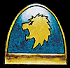
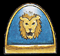

Imperial Forces |
Force Disposition Introduction |
Ork Forces |
|
The Celestial Lions have a long and glorious history, stretching back over four thousand years, but events set in motion a decade ago may now prove to be the Chapter's undoing. During the Khattarn Insurrection, five companies of the Celestial Lions were attached to the forces of Inquisitor Apollyon to aid him in crushing the revolt. The orbital defences were no match for the Space Marine battle barges and the initial landings were virtually unopposed. As the campaign progressed and the number of prisoners taken by the Celestial Lions grew, it became increasingly clear to them that there was more to the revolt than they had initially been briefed. The corrupt priesthood of Khattar had fallen prey to the vile god of decadence and led the ruling castes into the depraved worship of Slaanesh. The Planetary Defence Force and local Imperial Guard regiments could not stand against the righteous fire of the Space Marines, who easily swept aside all resistance. Within the space of three months the rebellion was crushed and the Celestial Lions were boarding their ships, ready for the journey back to their Fortress Monastery on Elysium IX. |
| ||||||||||||||||||||||||||||||||||||||||||||||||||||||||
|
 As the Space Marine craft achieved high orbit, the Navy ships in the Inquisitor's force began bombarding Khattar, systematically obliterating every trace of life on the planet's surface. This horrified the Celestial Lions who roundly condemned Inquisitor Apollyon. Their force commander, Captain Saul attempted to halt the bombardment, but he was unable to prevent the Inquisitor from wiping out the planet's population. The Celestial Lions were highly vocal in their condemnation of the Inquisitor's actions and began a series of loud and highly public criticisms of him and the entire Inquisition. A delegation of the Chapter's senior officers left for Terra to further their cause, but the ship failed to arrive. A freak warp storm blew up around their vessel, sending it hundreds of light years off course and into Ork held space. The wreckage of their craft was finally discovered nearly two years later. This was not enough to deter the Celestial Lions from their course and they continued to demand an investigation into the extermination of Khattar's population. Their efforts were to prove in vain however. The Inquisition answers to no-one but the Emperor himself. With the outbreak of the third war for Armageddon, the Celestial Lions were ordered to mobilise their entire Chapter and deploy their forces in Hive Volcanus. Within a month of their deployment, the Celestial Lions had suffered appalling casualties. Intelligence provided to them on the Orks strength and disposition proved to be woefully inaccurate and each battle found the Space Marines vastly outnumbered and cut off from support. Several of the higher ranking officers within the Chapter began to suspect that this was deliberate, but could prove nothing and had no choice but to continue their attacks on the Orks as before. In one disastrous battle, four entire companies were wiped out in the Mannheim Gap by the combined forces of Warlord Thogfang's Gargant mob and the Razor Speed Freeks. Losses continued to mount, culminating in the Orks launching an uncannily well co-ordinated attack on the Celestial Lions base camp.  The battle raged for over three hours, hundreds of Space Marines falling to the overwhelming numbers of the Orks. Unerringly accurate sniper fire from the mountains blasted through the camp, relentlessly targeting the Chapter's Apothecaries. A depleted company was finally able to break through the Ork ring of firepower and fight their way back into the hive. Only ninety six brothers of the Celestial Lions survived, and even worse, the last of the Chapter's Apothecaries took a bullet in the head within hours of arriving at Hive Volcanus. The gene seed of the fallen now lies unharvested on the battlefields of Armageddon and the surviving battle brothers have all sworn to die alongside them, fighting the Orks until the last breath has been crushed from their bodies. | |||||||||||||||||||||||||||||||||||||||||||||||||||||||||